DESIGN / APP & WEB
کشف، در اندازهٔ واقعی
۱۲ نما از رابط فعلی با قلم، آیکن و استایل واقعی. هر نما تصویر کامل و نسخهٔ HTML ثابت دارد.
تمام نوشتهها و پشتیبانهای این نماها ساختگیاند. گالری به سایت و دادهٔ خانواده وصل نیست؛ دکمههای درون HTML ثابتاند.

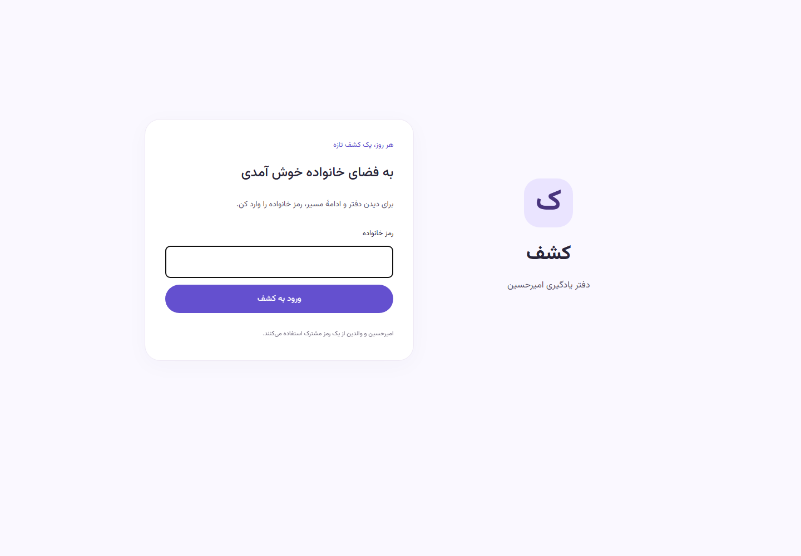

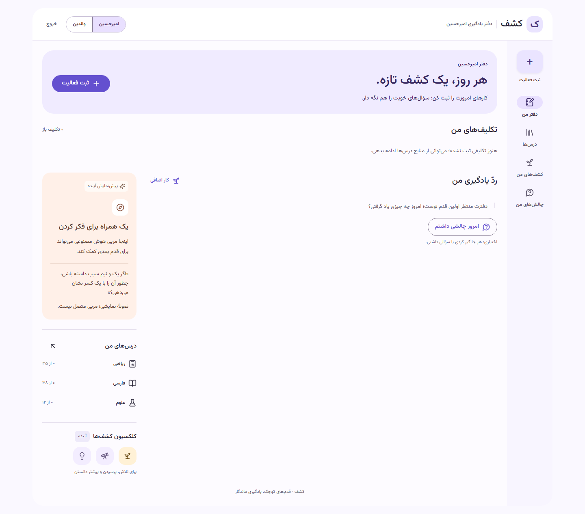

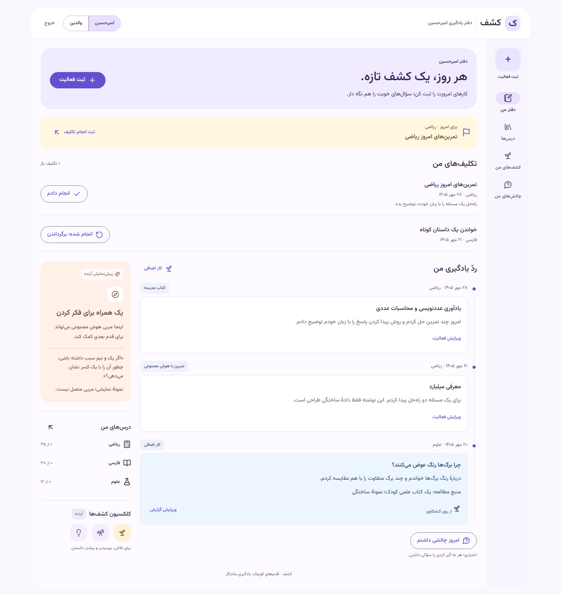

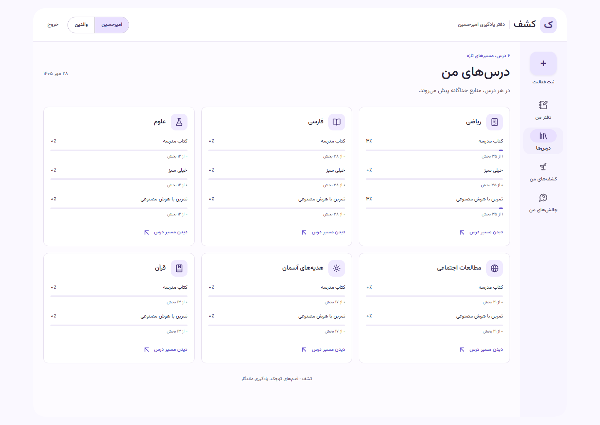

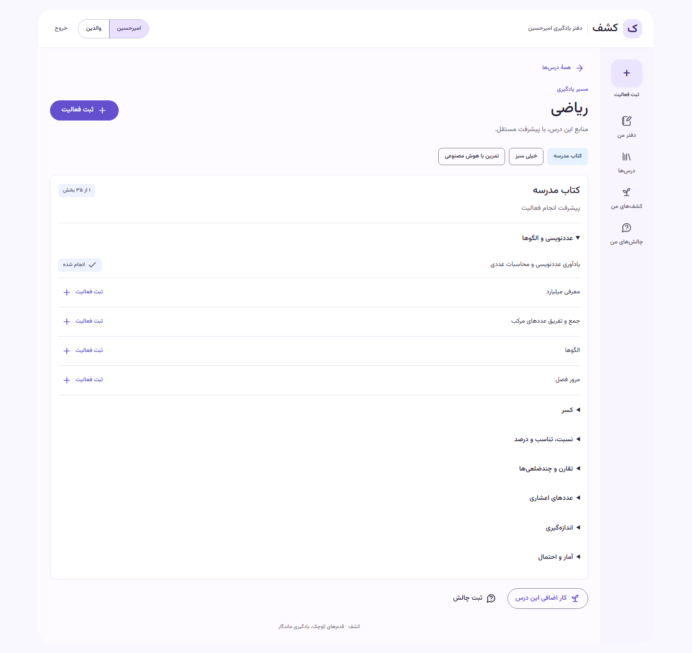

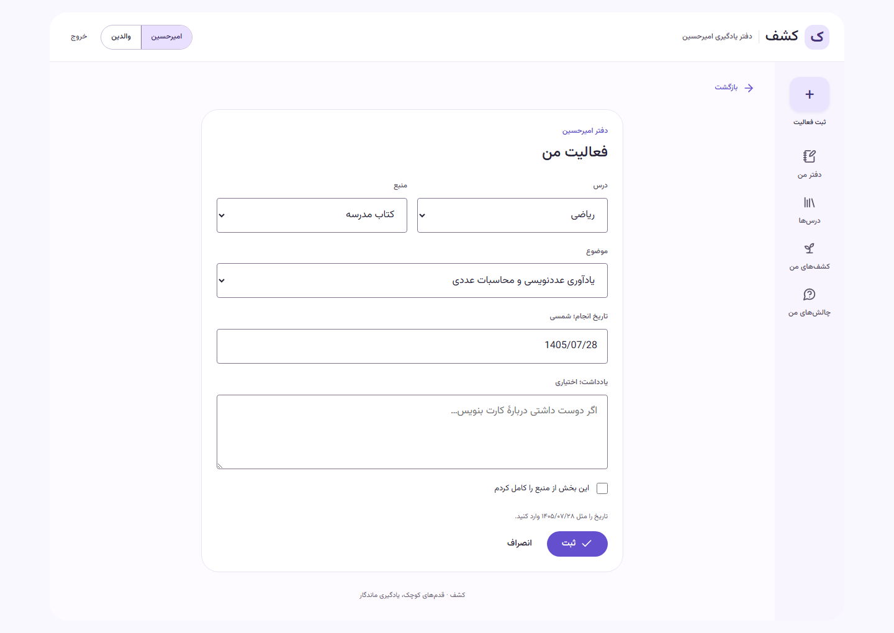

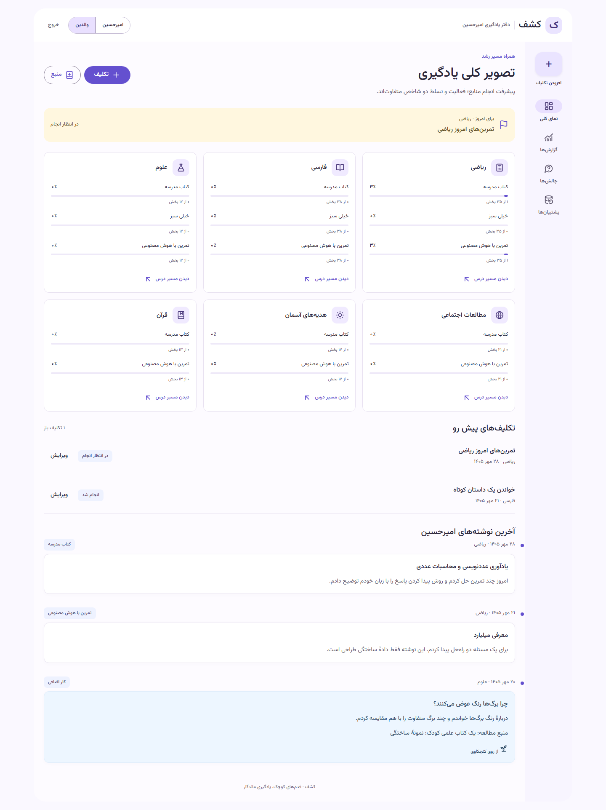

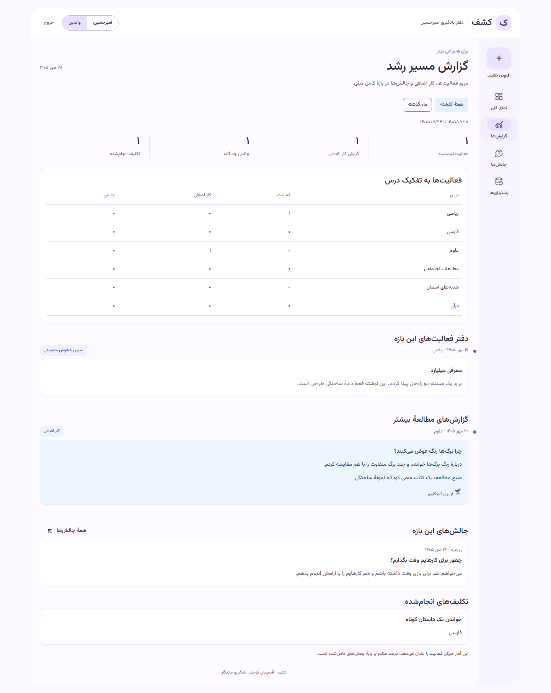

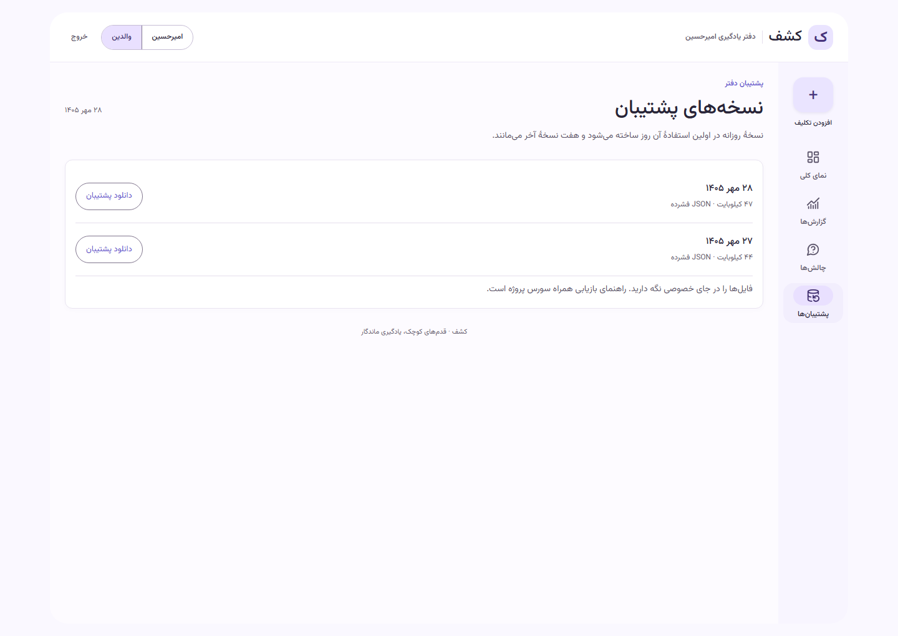

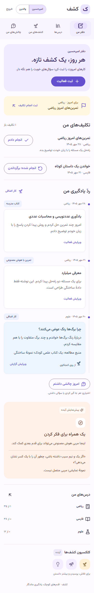

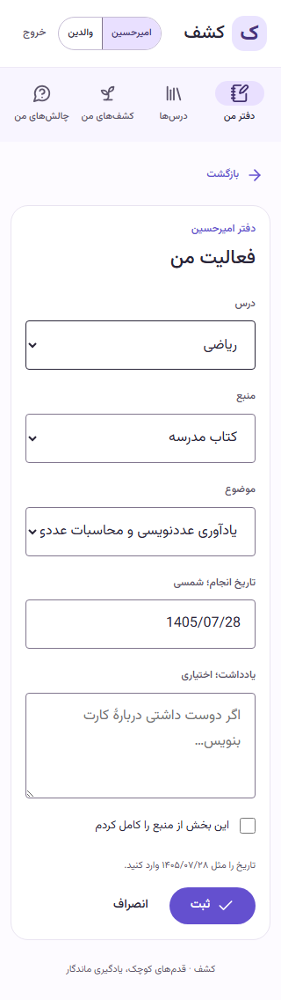

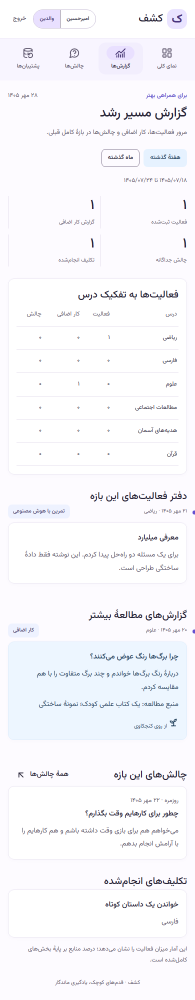